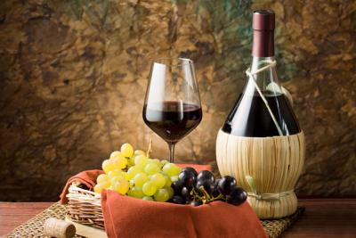
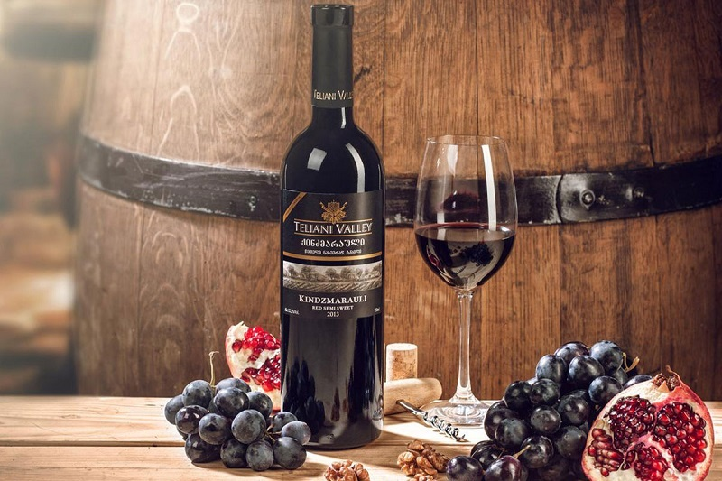
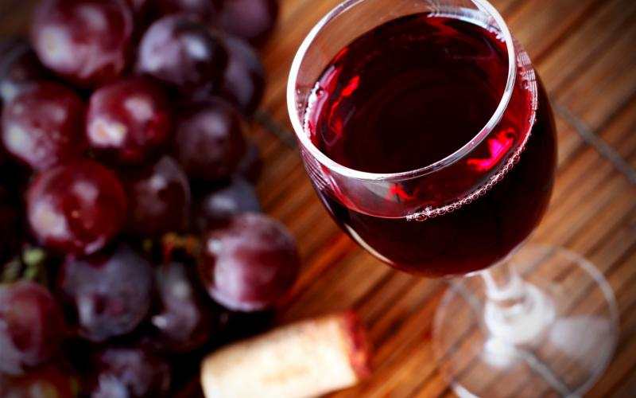

Tuskany
The main red varieties are Sangiovese, Merlot, Cabernet Sauvignon, whites - Chardonnay,
Vermentino,Trebbiano.Red samples account for about 84% of all wines produced. Tuscany is home to
famous wines such as Chianti, Montepulciano and Brunello di
Montalcino. They also create the famous Super Tuscan wines - "rebellious specimens", produced
contrary to established winemaking traditions.
Piedmont
The main red varieties are Nebbiolo, Dolcetto, Barbera, Cabernet
Sauvignon, whites are Cortese, Muscat, Arneis, Chardonnay. Of these, mainly vintage wines are
produced in Piedmont, including: Barolo (one of the region's most revered wines, full-bodied
taste with pronounced tannins); Barbaresco (spicy aroma, softer tannins); Gavi (one of the best
"fish" Italian wines); Asti (white sparkling wine with a refreshing taste and fruity bouquet).
Veneto
The main varieties of the region are corvina, garganega, glera (prosecco), trebbiano di soave.
Veneto is the birthplace of such legendary wines as white soave (dry and sweet still and
sometimes
sparkling versions), red valpolicella (classico, sweet recitos or dry amarone), bardolino (young
red or more aged Classico).
Sicily
In Sicily, white wines are predominantly produced. The main white Sicilian varieties include
ansonica, dzibibbo, catarratto, chardonnay, red - sira, nero d'avola, cabernet sauvignon,
merlot. The most famous wines from the appellations are Cerasuolo di Vittoria, Conteadi
Sclafani,
Contessa Entillina, Etna. In addition, the iconic fortified wines of Marsala are created in
Sicily.

Red wines
In Georgia, there are more than 500 autochthonous varieties, among which there are such iconic
ones as Saperavi, Matrassa, Mtsvane and Rkatsiteli. Also, the country is divided into 5 wine
regions: Kakheti, Kartli, Imereti, Racha-Lechkumi and the region of Guria and Samegrelo.The most
popular red Georgian wines are considered to be Kindzmarauli, Khvanchkara, Akhasheni, Teliani,
Kvareli, Mukuzani, Saperavi, Chkhaveri, Usakhelauri.
Dry red wine
Among the dry red wines of Georgia, it is worth highlighting:Teliani. Dry red table wine, on
average, has a strength of 10 to 12%; Saperavi; Kvareli. It is also produced from Saperavi
grapes using the Kakhetian technology. It is infused in oak barrels, but aging for more than
three years can result in a heavy wine.
Semi-dry red wine
Among the semi-dry red wines of Georgia, Pirosmani is worth mentioning. This wine is deep
burgundy in color. Its interesting feature is that it is naturally semi-dry. It is produced
according to the Imeretian technology. The key difference from the Kakhetian one is that during
the fermentation the grape twigs are separated.
Semi-sweet red
The best red semi-sweet Georgian wines are:Khvanchkaru. It belongs to the premium wine
segment;Chkhaveri. It has an interesting color. Despite being considered red, it has a pinkish
tint;Usakhelauri. Wine straight from Tsageri district. Positioned as premium semi-sweet
red;Kindzmarauli. One of the most popular wines, and therefore it is produced in almost all
wineries in Kakheti.
Homemade semi-sweet red
Undoubtedly, Mukuzani is considered to be the top among dry reds from Georgia. This wine is
called masculine because of its high tannin, density and rich taste. The only way to drink this
drink is long and small sips.It is made from Saperavi and therefore has a deep ruby color.
This drink is well suited for fatty dishes that are often found in Georgian cuisine. Also,
Mukuzani should be drunk at a lower temperature than regular red wines - this way it feels more
comfortable on the tongue.

The Shosh family wine cellar
Karl Shosh's own works - "Carlot", "Tamyanka Pink", "Black Rose", personalized vermouths, as well
as an amazing white Cahors wine made from white grape varieties, albeit in accordance with
classical technology.
Celtic courtyard
In the green estate "Keltskiy Dvor" drinks that were consumed by these tribes are recreated. To
understand their tastes and preferences, it is worth trying cider, ale, honey beer, graggert,
fraoshan, sbiten. What about grappa, schnapps, orujo, brandy, calvados? Naturally, from local,
Transcarpathian, raw materials.
Paraska's family basement
The local ice wine deserves special attention - ice wine made from grapes harvested after
freezing. It makes a drink with a raisin flavor. Its production technology is expensive and
costly, which is why ice wine is called a precious wine. After all, much less drink is obtained
from frozen grapes. In addition, the grapes must also freeze properly - the temperature cannot
be lower than –8 ºС.
Tasting room "Ursta"
Ursta offers nine varieties of wine for tasting. The subject of his special pride is the Unicum
wine made from dried dark grapes (Saperavi, Dove and Cake Francoche). Also among the author's
finds are the “Black Doctor” semi-sweet red vintage wine and the “Nectar” semi-sweet white
blended wine. The list also includes Riesling, Saperavi, Cahors.